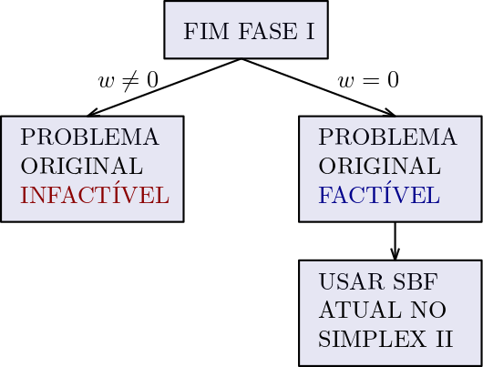

Chapter 5 Simplex Fase I
O método Simplex Fase II tem a premissa de que uma solução básica factível (SBF) inicial deve existir, para que o método possa começar. Quando temos um modelo com restrições do tipo \(\leq\), as próprias variáveis de folga formam uma SBF. Com restrições do tipo \(=\) ou \(\geq\) isso não ocorre, então o o Simplex Fase I deve ser executado, com o objetivo de encontrar uma SBF inicial.
Para o método completo, veja apresentação.
A Fase I pode ser executada pelo método das variáveis artificiais ou pelo método do Big-M. Usando as variáveis artificiais (explicado na apresentação acima), ao fim da Fase 1 existem 2 possibilidades:

Podemos entender o método das variáveis artificiais também de forma gráfica. Considere o seguinte problema de PL:
\[\begin{alignat*}{10} & \text{max z = } & x_1 & \\ & \text{Sujeito à} & 2x_1 & + 2x_2 & = 4\\ & & x_1 \geq 0 & \quad x_2 \geq 0& \end{alignat*}\]
Não temos uma SBF inicial, de forma que precisamos adicionar uma variável artificial. A idéia de adicionar variáveis artificias é a de que aumentamos a dimensionalidade do problema, criando um caminho entre a solução artificiais e a região factível do problema original. Se conseguirmos percorrer o caminho até chegar na região original, quer dizer que não precisamos mais das dos eixos artificiais criados, de forma que podemos removê-los. Segue abaixo a região factível original do problema bem como o novo plano criado:
5.1 Exemplos
EXEMPLO 1 Resolva o PL e mostre o caminho Simplex.
\[\begin{alignat*}{10} & \text{max z = } & 2x_1 & + 3x_2 \\ & \text{Sujeito à} & x_1 & + x_2 &\geq 10\\ & & 2x_1 & + x_2 & \leq 16\\ & & x_1 \geq 0 & \quad x_2 \geq 0& \end{alignat*}\]
SOLUÇÃO
Colocando na forma padrão, adicionando as variáveis artificiais e trocando a função \(z\) por \(w\):
\[\begin{alignat*}{10} & \text{min w = } & & & & & \bar{x_5} & + \bar{x_6} \\ & \text{Sujeito à} & x_1 & + x_2 & - x_3 & & + \bar{x_5}& & = 10\\ & & 2x_1 & + x_2 & & + x_4 & & + \bar{x_6} & = 16\\ & & x_1,...,\bar{x_6} \geq 0 \end{alignat*}\]
Na forma Tabular:
| VB | X1 | X2 | X3 | X4 | X5a | X6a | w |
|---|---|---|---|---|---|---|---|
| 0 | 0 | 0 | 0 | 1 | 1 | 0 | |
| \(??\) | 1 | 1 | -1 | 0 | 1 | 0 | 10 |
| \(??\) | 2 | 1 | 0 | 1 | 0 | 1 | 16 |
Deixando as variáveis artificiais na base, fazemos as operações:
\(L_1 \leftarrow L_1-L_2\)
\(L_1 \leftarrow L_1 - L_3\)
| VB | X1 | X2 | X3 | X4 | X5a | X6a | b |
|---|---|---|---|---|---|---|---|
| -3 | -2 | 1 | -1 | 0 | 0 | -26 | |
| \(x_5a\) | 1 | 1 | -1 | 0 | 1 | 0 | 10 |
| \(x_6a\) | 2 | 1 | 0 | 1 | 0 | 1 | 16 |
\(x_1\) entra na base e \(X6a\) (\(\bar{x_6}\)) sai:
\(L_3 \leftarrow L_3/2\)
\(L_1 \leftarrow L_1 + 3L_3\)
\(L_2 \leftarrow L_2 + L_3\)
| VB | X1 | X2 | X3 | X4 | X5a | X6a | b |
|---|---|---|---|---|---|---|---|
| 0 | -1/2 | 1 | 1/2 | 0 | 3/2 | -2 | |
| \(x_5a\) | 0 | 1/2 | -1 | -1/2 | 1 | -1/2 | 2 |
| \(x_1\) | 1 | 1/2 | 0 | 1/2 | 0 | 1/2 | 8 |
\(x_2\) entra na base e \(X5a\) (\(\bar{x_6}\)) sai:
\(L_1 \leftarrow L_1 + L_2\)
\(L_3 \leftarrow L_3 - L_2\)
\(L_2 \leftarrow L_2/(1/2)\)
| VB | X1 | X2 | X3 | X4 | X5a | X6a | b |
|---|---|---|---|---|---|---|---|
| 0 | 0 | 0 | 0 | 1 | 1 | 0 | |
| \(x_2\) | 0 | 1 | -2 | -1 | 2 | -1 | 4 |
| \(x_1\) | 1 | 0 | 1 | 1 | -1 | 1 | 6 |
Chegamos ao fim da Fase I. Como \(w = 0\) o problema original não é infactível, e a base atual (\(x_B^T = [x_2,x_1] = [4,6]\)) é uma SBF para o problema original. Podemos então remover as colunas das variáveis artificiais e reinserir a função objetivo original \(z\):
| VB | X1 | X2 | X3 | X4 | b |
|---|---|---|---|---|---|
| -2 | -3 | 0 | 0 | 0 | |
| \(x_2\) | 0 | 1 | -2 | -1 | 4 |
| \(x_1\) | 1 | 0 | 1 | 1 | 6 |
Note que o sistema não está na forma canônica em relação a nova base encontrada, pois os coeficientes de \(x_1\) e \(x_2\) na fo não estão zerados. Precisamos então realizar as seguintes operações:
\(L_1 \leftarrow L_1 + 2L_3\)
\(L_1 \leftarrow L_1 + 3L_2\)
| VB | X1 | X2 | X3 | X4 | b |
|---|---|---|---|---|---|
| 0 | 0 | -4 | -1 | 24 | |
| \(x_2\) | 0 | 1 | -2 | -1 | 4 |
| \(x_1\) | 1 | 0 | 1 | 1 | 6 |
Agora o Simplex Fase II pode continuar normalmente. \(x_3\) entra na base e \(x_1\) sai:
\(L_1 \leftarrow L_1 + 4L_3\)
\(L_2 \leftarrow L_2 + 2L_3\)
| VB | X1 | X2 | X3 | X4 | b |
|---|---|---|---|---|---|
| 4 | 0 | 0 | 3 | 48 | |
| \(x_2\) | 2 | 1 | 0 | 1 | 16 |
| \(x_3\) | 1 | 0 | 1 | 1 | 6 |
A solução ótima teme então \(x_B^T = [x_2,x_3] = [16,6]\). O caminho Simplex começa a ser mapeado a partir do momento que encontramos a primeira SBF para o problema, ou seja, ao fim da Fase I. O caminho é mostrado abaixo (ponto A e em seguida B):
EXEMPLO 2 (INFACTÍVEL) Resolva o seguinte PL:
\[\begin{alignat*}{10} & \text{max z = } & x_1 & + x_2 \\ & \text{Sujeito à} & x_1 & + x_2 & \leq 10\\ & & & + x_2 & \geq 11\\ & & x_1 \geq 0 & \quad x_2 \geq 0& \end{alignat*}\]
SOLUÇÃO
Colocando na forma padrão, adicionando variáveis artificiais e trocando a função objetivo, temos a tabela:
| VB | X1 | X2 | X3 | X4 | X5a | X6a | b |
|---|---|---|---|---|---|---|---|
| 0 | 0 | 0 | 0 | 1 | 1 | 0 | |
| \(??\) | 1 | 1 | 1 | 0 | 1 | 0 | 10 |
| \(??\) | 0 | 1 | 0 | -1 | 0 | 1 | 11 |
Para colocar as variáveis artificiais \(\bar{x_5}\) e \(\bar{x_6}\) na base:
\(L_1 \leftarrow L_1 - L_2\)
\(L_1 \leftarrow L_1 - L_3\)
| VB | X1 | X2 | X3 | X4 | X5a | X6a | b |
|---|---|---|---|---|---|---|---|
| -1 | -2 | -1 | 1 | 0 | 0 | -21 | |
| \(x_{5a}\) | 1 | 1 | 1 | 0 | 1 | 0 | 10 |
| \(x_{6a}\) | 0 | 1 | 0 | -1 | 0 | 1 | 11 |
\(x_2\) entra na base e \(\bar{x_5}\) sai:
\(L_1 \leftarrow L_1 + 2L_2\)
\(L_3 \leftarrow L_3 - L_2\)
| VB | X1 | X2 | X3 | X4 | X5a | X6a | b |
|---|---|---|---|---|---|---|---|
| 1 | 0 | 1 | 1 | 2 | 0 | -1 | |
| \(x_2\) | 1 | 1 | 1 | 0 | 1 | 0 | 10 |
| \(x_{6a}\) | -1 | 0 | -1 | -1 | -1 | 1 | 1 |
Chegamos ao fim do Simplex, porém o valor de \(w \neq 0\), o que indica que o problema original é infactível.
EXEMPLO 3 (PROBLEMA DO FAZENDEIRO) Resolva o seguinte PL e mostre o caminho Simplex percorrido:
\[\begin{alignat*}{10} & \text{max z = } & 2x_1 & + 3x_2 \\ & \text{Sujeito à} & x_1 & + x_2 & = 3\\ & & x_1 & + 2x_2 & \leq 4\\ & & x_1 \geq 0 & \quad x_2 \geq 0& \end{alignat*}\]
SOLUÇÃO
Adicionando as variáveis de folga, artificiais e trocando a função objetivo \(z\) por \(w\):
\[\begin{alignat*}{10} & \text{min w = } & & & & \bar{x_4} & + \bar{x_5} \\ & \text{Sujeito à} & x_1 & + x_2 & & + \bar{x_4} & & = 3\\ & & x_1 & + 2x_2 & + x_3 & & \bar{x_5} & = 4\\ & & x_1,...,\bar{x_5} \geq 0 \end{alignat*}\]
Na tabela Simplex:
| VB | X1 | X2 | X3 | X4a | X5a | b |
|---|---|---|---|---|---|---|
| 0 | 0 | 0 | 1 | 1 | 0 | |
| \(??\) | 1 | 1 | 0 | 1 | 0 | 3 |
| \(??\) | 1 | 2 | 1 | 0 | 1 | 4 |
Colocando as variáveis artificiais na base:
\(L_1 \leftarrow L_1 - L_2\)
\(L_1 \leftarrow L_1 - L_3\)
| VB | X1 | X2 | X3 | X4a | X5a | b |
|---|---|---|---|---|---|---|
| -2 | -3 | -1 | 0 | 0 | -7 | |
| \(x_{4a}\) | 1 | 1 | 0 | 1 | 0 | 3 |
| \(x_{5a}\) | 1 | 2 | 1 | 0 | 1 | 4 |
\(x_2\) entra na base e \(x_{5a}\) sai:
\(L_3 \leftarrow L_3/2\)
\(L_1 \leftarrow L_1 + 3L_3\)
\(L_2 \leftarrow L_2 - L_3\)
| VB | X1 | X2 | X3 | X4a | X5a | b |
|---|---|---|---|---|---|---|
| -1/2 | 0 | 1/2 | 0 | 3/2 | -1 | |
| \(x_{4a}\) | 1/2 | 0 | -1/2 | 1 | -1/2 | 1 |
| \(x_2\) | 1/2 | 1 | 1/2 | 0 | 1/2 | 2 |
\(x_1\) entra na base e \(x_{4a}\) sai:
\(L_1 \leftarrow L_1 + L_2\)
\(L_3 \leftarrow L_3 - L_2\)
\(L_2 \leftarrow L_2/(1/2)\)
| VB | X1 | X2 | X3 | X4a | X5a | b |
|---|---|---|---|---|---|---|
| 0 | 0 | 0 | 1 | 1 | 0 | |
| \(x_1\) | 1 | 0 | -1 | 2 | -1 | 2 |
| \(x_2\) | 0 | 1 | 1 | -1 | 1 | 1 |
Voltando a função objetivo original e removendo as colunas das variáveis de folga, temos:
| VB | X1 | X2 | X3 | b |
|---|---|---|---|---|
| -2 | -3 | 0 | 0 | |
| \(x_1\) | 1 | 0 | -1 | 2 |
| \(x_2\) | 0 | 1 | 1 | 1 |
Atualizando a tabela para manter \(x_1\) e \(x_2\) na base:
\(L_1 \leftarrow L_1 + 2L_2\)
\(L_1 \leftarrow L_1 + 3L_2\)
| VB | X1 | X2 | X3 | b |
|---|---|---|---|---|
| 0 | 0 | 1 | 7 | |
| \(x_1\) | 1 | 0 | -1 | 2 |
| \(x_2\) | 0 | 1 | 1 | 1 |
A solução básica factível inicial, encontrada pelo método Simplex Fase I já é a solução ótima do problema.
5.2 Exercícios
EXERCICIO 1 Encontre a solução do seguinte problema usando o método Simplex, com o auxílio de uma planilha de Excel.
Um vendedor de frutas pode transportar 800 caixas de frutas para sua região de vendas. Ele necessita transportar 200 caixas de laranjas a R$20,00 de lucro por caixa, pelo menos 100 caixas de pêssegos a R$10,00 de lucro por caixa, e no máximo 200 caixas de tangerinas a R$30,00 de lucro por caixa. De que forma ele deverá carregar o caminhão para obter o lucro máximo?